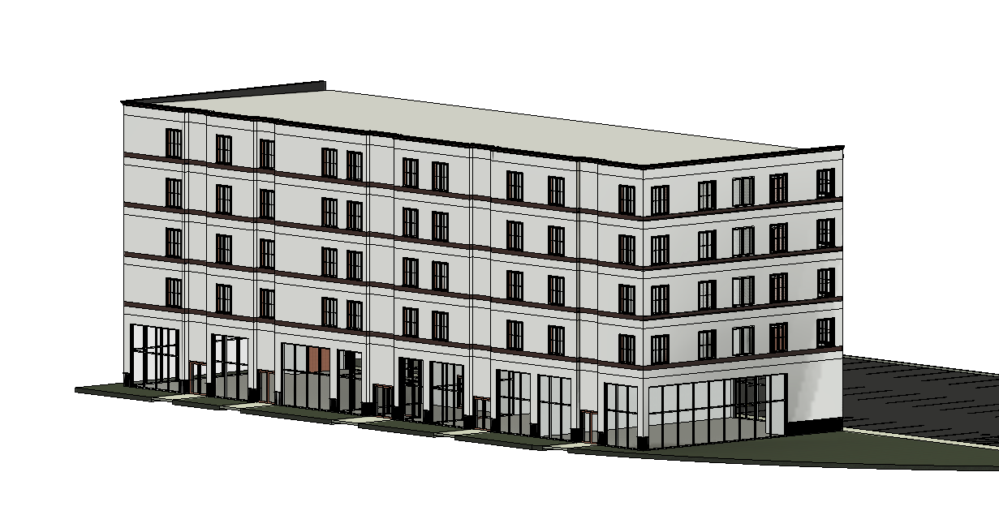
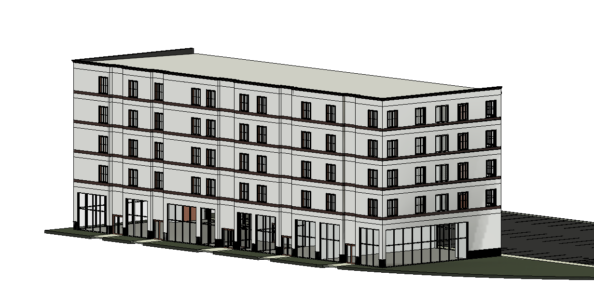

Commercial
Welcome to my portfolio of commercial architecture projects, where innovation, functionality, and the power of design converge to shape the landscapes of commerce and industry. Within these pages, I invite you to explore a diverse collection of projects that exemplify the dynamic intersection of architecture, business, and community. As an architect specializing in commercial spaces, I am committed to creating environments that not only inspire and engage but also enhance the daily experiences of those who inhabit them. From bustling urban centers to serene corporate campuses, each project in this portfolio represents a unique opportunity to redefine the way we work, shop, dine, and interact with the world around us.
Career
Throughout my career, I have had the privilege of collaborating with a wide range of clients, from visionary entrepreneurs to established corporations, each with their own distinct vision and objectives. By understanding their needs, aspirations, and brand identities, I strive to design spaces that not only meet their functional requirements but also embody their values and ethos. In this portfolio, you will encounter a diverse array of commercial projects, ranging from sleek office buildings and retail spaces to vibrant mixed-use developments and innovative community centers. Whether it's creating flexible work environments that foster collaboration and creativity, designing retail spaces that captivate and inspire, or crafting hospitality venues that offer memorable experiences, my designs are guided by a commitment to excellence, sustainability, and the human experience.
 

Enjoy
Beyond aesthetics, my approach to commercial architecture is grounded in a deep understanding of the economic, social, and environmental factors that shape the built environment. From leveraging cutting-edge technologies to implementing sustainable design principles, I am dedicated to creating spaces that not only stand the test of time but also contribute to the well-being of their occupants and the broader community. As you explore these pages, I invite you to immerse yourself in the world of commercial architecture and envision the possibilities that lie ahead. Whether you are a business owner seeking to transform your space, a developer embarking on a new project, or simply a lover of architecture and design, I hope that this portfolio serves as a source of inspiration and a testament to the transformative power of architecture in shaping the way we live, work, and connect with the world around us. Welcome to my portfolio of commercial architecture projects, where innovation meets impact and the future takes shape.